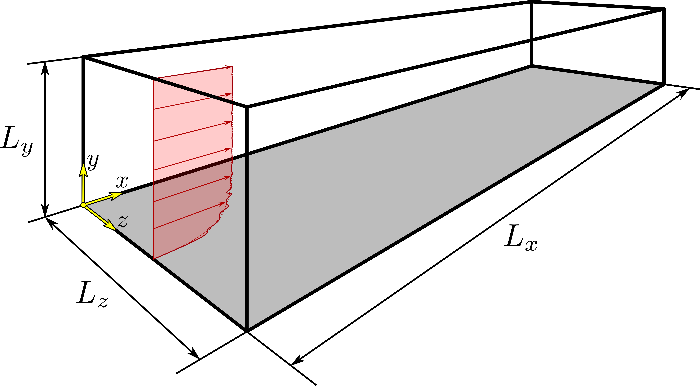
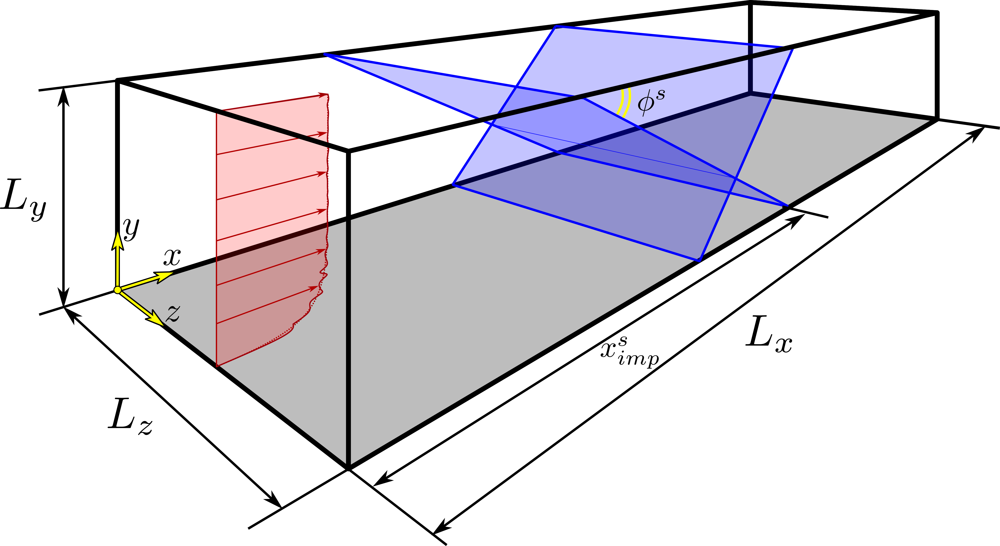

STREAmS equations and flow cases
STREAmS has been tailored to carry out DNS of three types of canonical compressible flow configurations:
compressible plane channel flow,
compressible boundary layer over a flat plate,
shock wave/boundary layer interaction generated by oblique shock impingement.
For all the flow cases, \(x\) indicates the streamwise coordinate, \(y\) indicates the wall-normal coordinate, and \(z\) indicates the spanwise coordinate. The dimensions of the computational domain in the corresponding directions are \(L_x\), \(L_y\), and \(L_z\).
Non-dimensional governing equations
STREAmS solves the fully compressible Navier–Stokes equations for a calorically or thermally perfect, heat-conducting gas. The governing equations in dimensional form, adopting the Einsten summation notation, are thus:
where we indicate dimensional quantities with the asterisk symbol. In particular, \(\rho^*\) is the density, \(u_i^*\) are the velocity components in the three coordinate directions, \(p^*\) is the pressure, \(\sigma^*_{ij}\) is the viscous stress tensor, \(E^*\) is the total specific energy defined as \(E^* = e^* + u_i^* u_i^*/2\), \(H^*\) is the total specific enthalpy, defined as \(H^* = E^* + p^*/\rho^*\), and \(R^*\) is the gas constant.
The set of Navier-Stokes equations is considered in a given domain and is completed by assigning initial and boundary conditions.
For the general case of a thermally perfect gas, the specific internal energy and enthalpy are defined respectively as
where \(T_{R,E}^*\) is the reference temperature for energy, and \(C_p\) and \(C_v\) are respectively the specific heat capacity at constant pressure and volume, which are assumed in general as functions of the temperature. It is worth noting that \(e^*\) and \(h^*\) formally depend on \(T_{R,E}\) but they appear in Navier-Stokes set of equations only as derivatives and, as a consequence, their values are defined up to an additive constant. For this reason \(T_{R,E}\) can be chosen freely in the previous equations.
The constitutive equations defining the viscous stress tensor and the heat flux vector are:
where \(\mu^*\) is the dynamic viscosity, evaluated as a function of the temperature, and \(k^*\) is the thermal conductivity, expressed in terms of the Prandtl number \(Pr\) as \(k^* = \mu^* C_p^*/Pr\).
For the viscosity-temperature relationship, two options are available:
where \(\alpha\) and \(S^*\) are coefficients that depend on the fluid.
In order to obtain the nondimensional form of the governing equations, we define some reference quantities and write each dimensional quantity \(q^*\) as the product between its reference quantity \(q_0\) and its non-dimensional value \(q\), i.e.,
We assume a minimal set of four independent reference quantities and, in particular, the quantities reported in the following table:
\(R_0\) |
\(\rho_0\) |
\(T_0\) |
\(L_0\) |
The other reference quantities are uniquely derived from the previous quantities as summarized in the following table:
\(p_0\) |
\(U_0\) |
\(T_0\) |
\(c_{p,0}\) |
\(c_{v,0}\) |
\(\mu_0\) |
\(k_0\) |
\(e_0\) |
\(h_0\) |
|---|---|---|---|---|---|---|---|---|
\(\rho_0 R_0 T_0\) |
\(\sqrt{R_0 T_0}\) |
\(L_0/U_0\) |
\(R_0\) |
\(R_0\) |
\(\rho_0 U_0 L_0\) |
\(\rho_0 U_0 L_0 c_{p,0}\) |
\(R_0 T_0\) |
\(R_0 T_0\) |
The choice of a minimal set of independent quantities ensure that non-dimensional form of the equations is identical to the dimensional one, provided that dimensional quantities are replaced by non-dimensional counterparts.
Using non-dimensional form of equations allows to minimize the parameter space of a given problem by matching independent reference quantities to physical quantities of a given set of problems. For instance, in order to consider all the simulations in a box domain of size \(L^*_{BOX}\), it is possible to assume that the reference length matches the box size, i.e., \(L_0 = L^*_{BOX}\) so that non-dimensional size of the box is always one, i.e., \(L_{BOX} = \frac{L^*_{BOX}}{L_0} = 1\). This way, it is possible to only simulate non-dimensional unitary box domains while results apply to any dimensional box provided that dimensional results are reconstucted by (freely) assuming physical dimensional values for independent reference quantities.
In our case, the non-dimensionalization is based on four independent quantities. To meaningfully reduce the parameter space, we set them according to our considered flow cases. However, one reference quantity is chosen independently of the flow case. In particular we set
The other three reference quantities are set according to the flow case as summarized in the following table.
Flow case |
\(\rho_0\) |
\(T_0\) |
\(L_0\) |
|---|---|---|---|
Channel
|
\(\rho^*_B\) |
\(T^*_W\) |
\(h^*\) |
Boundary layer |
\(\rho^*_\infty\) |
\(T^*_\infty\) |
\(\delta^*_I\) |
Moreover, we also set the reference temperatures of energy \(T_{R,E}\) and viscosity \(T_{R,V}\) equal to the reference temperature for non-dimensionalization \(T_0\). This can be done since such reference temperatures can be chosen freely. Please note, however, that:
the energy at the reference temperature equals to zero and is cleary different from the reference energy used for non-dimensionalization \(e_0\)
viscosity at the reference temperature does not correspond to the reference viscosity \(\mu_0\), i.e., there is in general a non-unity value of non-dimensional viscosity \(\mu(T_{R,V})=\mu^*(T_{R,V})/\mu_0\) at reference temperature.
A detailed discussion of each flow case follows.
Flow case [1] - Compressible plane channel flow

For the simulation of the compressible plane channel flow, the size of computational domain is given by \([Lx,2h,Lz]\). In particular \(h\) indicates the half-height of the channel.
Bulk quantites are indicated with \(B\) subscript and are defined as:
bulk density
bulk velocity
bulk temperature
where \(V\) is the volume of the computational domain, \(\rho\) is the density, \(u\) is the streamwise velocity, and \(T\) is the temperature.
We always consider:
– constant wall temperature
– constant bulk density (a forcing term is added to this purpose)
– constant bulk velocity (a forcing term is added to this purpose)
As concerns bulk temperature, we consider two different types of channel flow.
– [1-a] Fixed bulk temperature: a forcing term is added also to th energy equation to ensure bulk temperature is constant.
– [1-b] Free bulk temperature: temperature is free to evolve and convergence is reached when fixed wall temperature prevent additional (aerodynamic) heating in the bulk.
Flow case [1-a] - Fixed bulk temperature channel
Case [1-a] is perfectly defined by the following quantities:
\(\rho^*_B\) |
\(T^*_B\) |
\(U^*_B\) |
\(\mu^*_w\) |
\(k^*_w\) |
\(T^*_w\) |
\(L^*_x\) |
\(h^*\) |
\(L^*_z\) |
\(\rho_0\) |
\(T_0\) |
\(L_0\) |
Independent reference quantities for non-dimensionalizations are highlighted in the second line. This means that corresponding non-dimensional quantities are taken as unitary.
It would be possible to assign the remaining six quantities as inputs of the simulation. However, this is done only for \(L_x\) and \(L_z\). The other four quantities are estimated from more physically meaningful non-dimensional groups which can be assigned from input. In particular:
estimated friction Reynolds number
bulk Mach number based on the bulk temperature
non-dimensional wall temperature delta
Prandtl number
where \(u_\tau\) is the friction velocity, \(\nu_w\) is the kinematic viscosity at the wall and \(T_{B,R}\) is the recovery wall temperature based on \(T_B\). Please note that the non-dimensional groups have been written without asterisks because the definitions stand considering both non-dimensional and dimensional variables.
Note
Channel with fixed bulk temperature: derivation of flow quantities from input
Inputs:
References quantities (unitary non dimensional values): \(\rho_B\), \(T_w\), \(h\)
Non-dimensional groups: \(Re_\tau\), \(M_B\), \(\theta\), \(Pr\)
Outputs:
Non-dimensional flow parameters \(T_B\), \(U_B\), \(\mu_w\), \(k_w\)
Derivation:
Flow case [1-b] - Free bulk-temperature channel
Case [1-b] is perfectly defined by the following quantities:
\(\rho^*_B\) |
\(U^*_B\) |
\(\mu^*_w\) |
\(k^*_w\) |
\(T^*_w\) |
\(L^*_x\) |
\(h^*\) |
\(L^*_z\) |
\(\rho_0\) |
\(T_0\) |
\(L_0\) |
Independent reference quantities for non-dimensionalizations are highlighted in the second line. This means that corresponding non-dimensional quantities are taken as unitary.
It would be possible to assign the remaining five quantities as inputs of the simulation. However, this is done only for \(L_x\) and \(L_z\). The other three quantities are estimated from more physically meaningful non-dimensional groups which can be assigned from input. In particular:
estimated friction Reynolds number
bulk Mach number based on the wall temperature
Prandtl number
where \(u_\tau\) is the friction velocity, \(\nu_w\) is the kinematic viscosity at the wall and \(T_{B,R}\) is the recovery wall temperature based on \(T_B\). Please note that the non-dimensional groups have been written without asterisks because the definitions stand considerind both non-dimensional of dimensional variables.
Note
Channel with free bulk temperature: derivation of flow quantities from input
Inputs:
References quantities (unitary non dimensional values): \(\rho_B\), \(T_w\), \(h\)
Non-dimensional groups: \(Re_\tau\), \(\widetilde{M_B}\), \(Pr\)
Outputs:
Non-dimensional flow parameters \(U_B\), \(\mu_w\), \(k_w\)
Derivation:
Flow-case [2-a] Boundary layer
{kind=link}
[BL] is perfectly defined by the following quantities:
\(\rho^*_\infty\) |
\(T^*_\infty\) |
\(U^*_\infty\) |
\(\mu^*_\infty\) |
\(k^*_\infty\) |
\(T^*_w\) |
\(L^*_x\) |
\(L^*_y\) |
\(\delta_I\) |
\(L^*_z\) |
\(\rho_0\) |
\(T_0\) |
\(L_0\) |
Independent reference quantities for non-dimensionalizations are highlighted in the second line. This means that corresponding non-dimensional quantities are taken as unitary.
It would be possible to assign the remaining six quantities as inputs of the simulation. However, this is done only for \(L_x\), \(L_y\), and \(L_z\). The other four quantities are estimated from more physically meaningful non-dimensional groups which can be assigned from input. In particular:
estimated friction Reynolds number
free-stream Mach number
non-dimensional wall temperature delta
Prandtl number
where \(u_\tau\) is the friction velocity, \(\nu_w\) is the kinematic viscosity at the wall and \(T_{B,R}\) is the recovery wall temperature based on \(T_B\). Please note that the non-dimensional groups have been written without asterisks because the definitions stand considerind both non-dimensional of dimensional variables.
Note
Boundary layer: derivation of flow quantities from input
Inputs:
References quantities (unitary non dimensional values): \(\rho_\infty\), \(T_\infty\), \(\delta_I\)
Non-dimensional groups: \(Re_\tau\), \(M_\infty\), \(\theta\), \(Pr\)
Outputs:
Non-dimensional flow parameters \(U_\infty\), \(\mu_\infty\), \(k_\infty\), \(T_w\)
Derivation:
Flow case [2-b] - Shock-boundary layer interaction
{kind=link}
Simulations of the shock wave/boundary layer interaction assume that an oblique shock wave from the top surface of the domain impinges on a boundary layer developing on the flat bottom surface.
Discussions of parameters is similar to the boundary layer case except that two more quantities are needed to define the case and, as a consequence, to be defined from input:
the shock impingment location \(x_{imp}^s\), which is the longitudinal coordinate where the impinging shock would intersect the bottom surface.
The shock wave angle \(\phi^s\), which is the acute angle between the shock and the top (or bottom) surface.